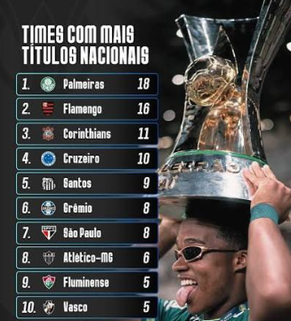
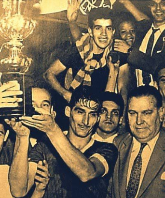
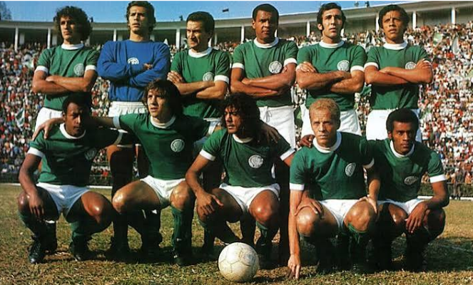
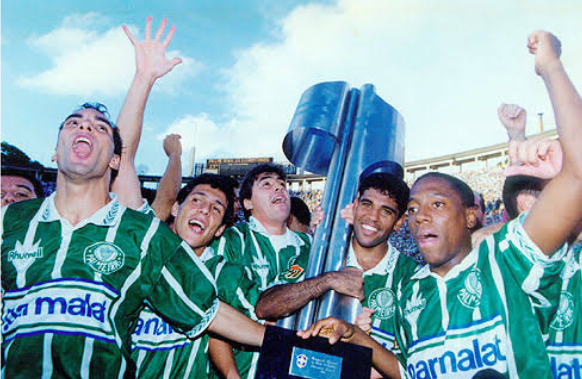
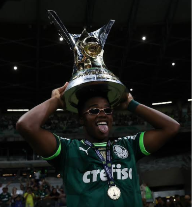
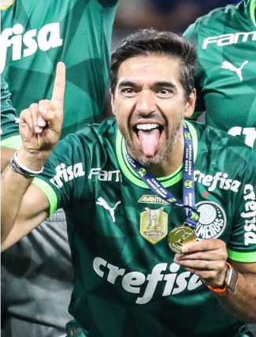

O maior campeão do Brasil
Uma história construída com títulos e tradição
O Palmeiras possui uma das trajetórias mais vitoriosas do futebol brasileiro. Ao longo de sua história, conquistou importantes competições nacionais, destacando-se principalmente no Campeonato Brasileiro e na Copa do Brasil.
Seu desempenho nessas competições consolidou o clube como o maior campeão brasileiro em número de títulos do Campeonato Brasileiro.

As primeiras conquistas nacionais (1960–1970)
A primeira grande conquista nacional do Palmeiras aconteceu em 1960, quando venceu a Taça Brasil, competição que reunia campeões estaduais e era utilizada para definir o representante brasileiro na Libertadores.
Essas conquistas foram fundamentais para a construção da tradição vencedora do Palmeiras. Posteriormente, a Confederação Brasileira de Futebol (CBF) reconheceu oficialmente esses torneios como títulos do Campeonato Brasileiro.

O domínio da Segunda Academia (1972–1973)
Durante a década de 1970, o Palmeiras continuou demonstrando sua superioridade no futebol brasileiro. Com a força da Segunda Academia, conquistou os Campeonatos Brasileiros de 1972 e 1973.
A equipe ficou conhecida pelo futebol coletivo e pela qualidade de seus jogadores, como Leão, Ademir da Guia, Dudu e Luís Pereira. As conquistas consecutivas reforçaram a posição do Palmeiras entre as principais equipes do país.

A retomada nacional na década de 1990
Após um período sem conquistar o Campeonato Brasileiro, o Palmeiras voltou ao topo em 1993 e 1994, sob o comando de Vanderlei Luxemburgo e com o apoio da parceria com a Parmalat.
A equipe contava com grandes jogadores, como Evair, Edmundo, Zinho e César Sampaio. Além dos títulos brasileiros, esse período também marcou a primeira conquista do clube na Copa do Brasil, em 1998, após vencer o Cruzeiro na decisão.

A Copa do Brasil e os desafios dos anos 2000
Em 2000, o Palmeiras conquistou a Copa dos Campeões, competição que reunia clubes vencedores de torneios regionais e nacionais. O título garantiu ao clube mais uma importante conquista no cenário brasileiro.
Nos anos seguintes, o Verdão passou por dificuldades, incluindo os rebaixamentos para a Série B em 2002 e 2012. Apesar dos desafios, voltou a conquistar a Copa do Brasil em 2012, 2015 e 2020, demonstrando sua capacidade de reconstrução e superação.

A era recente e a consolidação nacional (2016–2023)
A partir de 2016, o Palmeiras iniciou uma fase de grande sucesso no Campeonato Brasileiro. Sob o comando de Cuca, conquistou o título daquele ano, encerrando um período de 22 anos sem vencer a competição.
Em 2018, voltou a levantar a taça, desta vez com Luiz Felipe Scolari como treinador. Mais recentemente, sob o comando de Abel Ferreira, conquistou os Brasileiros de 2022 e 2023, incluindo o bicampeonato consecutivo.
Em 2023, também conquistou a Supercopa do Brasil, após vencer o Flamengo por 4 a 3 em uma partida emocionante.

O maior campeão brasileiro
O Palmeiras soma 12 títulos do Campeonato Brasileiro, considerando a Taça Brasil e o Torneio Roberto Gomes Pedrosa, reconhecidos posteriormente pela CBF como competições equivalentes ao Campeonato Brasileiro.
Além disso, possui quatro títulos da Copa do Brasil, conquistados em 1998, 2012, 2015 e 2020. Esses números reforçam a importância do clube na história do futebol nacional e reforça o título de maior campeão do Brasil.
